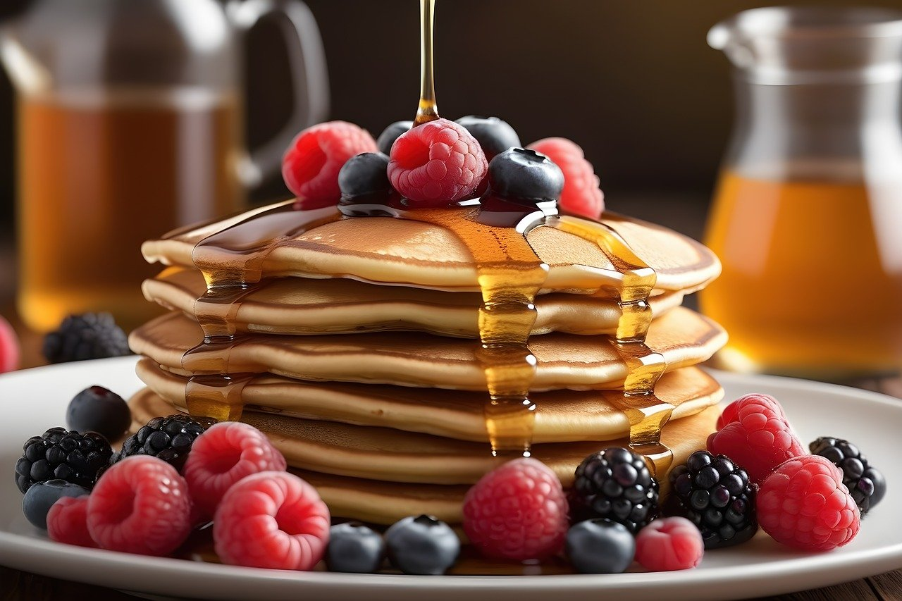

Pancakes Recipes

Description
Perfect Pancakes
Ingredients
- 250g flour
- 2-3 tablespoons sugar
- 2 teaspoon baking powder
- 1 pinch of salt
- 2 eggs (size:m)
- 200ml milk
Steps
- Mix the flour with the sugar, baking powder and salt. Add eggs and milk and mix everything into a smooth dough. Put some oil in a pan and heat over medium heat. Pour 2 tablespoons of dough into each pan. The pancakes should have a diameter of approximately 10 cm.
-
Fry each pancake for about 2 minutes until small bubbles form, then turn and fry the other side for the same amount of time. Garnish American pancakes with berries and maple syrup and serve.